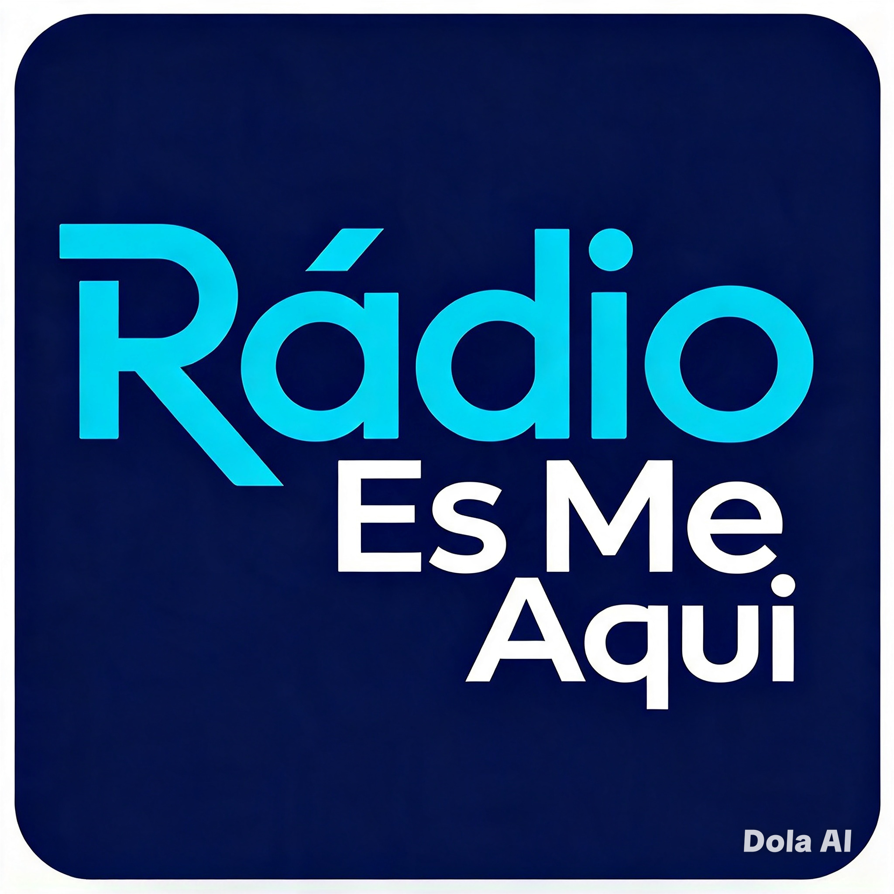

● TRANSMISSÃO AO VIVO
Rádio És-me Aqui
Jesus é a nossa conexão!
🔈
🔊
Temporizador desligado
Verificando servidor...
Capas e Músicas
Uma programação feita para aproximar você de Jesus.

Jesus é a nossa conexão!
Uma programação feita para aproximar você de Jesus.